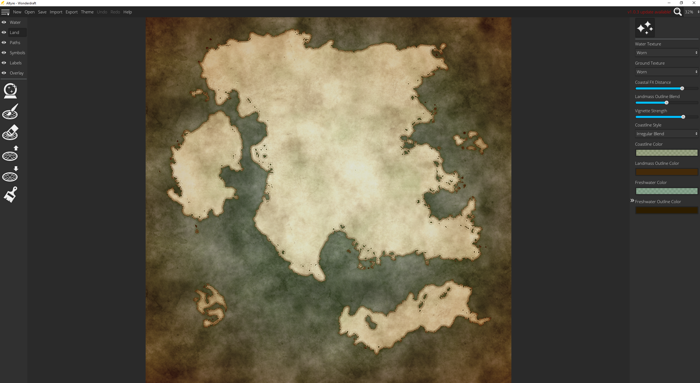

Click to go back
Wonderdraft
Wonderdraft is an application for designing maps that can be used for a variety of uses.
| Price: | $30 |
|---|---|
| Skill Level: | Beginner |
| Source/Download: | Wonderdraft Mainpage |
Wonderdraft is very well tooled and has plenty of features that most basic users can utilize fairly easily.
Compared to most of the other map design software out there, Wonderdraft is definitely one of the most easy to use software to buy and has a decent amount of pros.
- Easy to use tools to design very detailed maps.
- Ability to procedurally generate maps.
- Save maps in resolutions up to 8192 x 8192 pixels.
- Fairly low recommended system specs.
User Interface
The User Interface was designed to be easy to navigate and the tools are grouped into descriptive categories on the left side.
The settings and parameters on the right are very easy to adjust and have tooltips to define what each parameter does.
Ease of Use

The map created above took roughly about two hours to make. All I mostly had to do was set some settings for the land-raise tools for roughness and was able to draw land out of the ocean.
Opinion
Overall, I really like Wonderdraft for it's easy to use tools and navigation. It makes map design very easy at a low cost when compared to other software that can cost from $60 up past $100.
My only complaint that I have had is that the software can sometimes be buggy and is sometimes a pain to update.
The software was referred to by the developer as an "alpha" version. Though the software does not have too many bugs, there are some that can cause issuse.
The bugs I refer to were issues with saving that would sometimes cause a "file corruption" error. These bugs are mostly fixed by now, though occasionally they can still happen under certain circumstances. The error can be easily fixed by loading a previous snapshot of the map through some menus on the top of the screen.
Updating the software is sometimes a pain as well. To update the software,you have to go to the settings and input the software key into the field next to the update section. The software key can only be found from the Humblebundle order page in the URL. This can be problematic if you do not have an account when you ordered the software and closed the page prior to logging in to claim the software to your account. This then makes it difficult to find the order page afterwards if it is not in history.